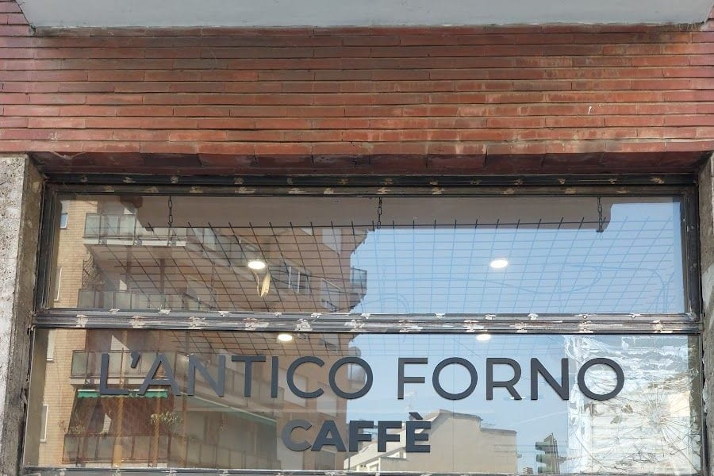

Panificio · caffetteria · Via Ettore Ponti 33, Milano
L'Antico Forno Caffè Pane & Dolci
Il forno di Via Ettore Ponti, alla Barona: il pane di tanti tipi, la focaccia, le pizze e le brioche, e il caffè al banco. Apre alle 7, il sabato alle 6.
«Il pane migliore della zona.» da una recensione su Google
4,5 su Google, 104 recensioni
Dal lunedì al sabato

Sotto la scala
Un caffè sotto le lampadine
Contro il muro di mattoni c'è una vecchia scala di legno appesa di sbieco, con le lampadine sulle corde di juta; sotto, una mensola di legno e qualche sgabello.
La mattina il caffè e la brioche, a pranzo la pizza al trancio e la focaccia, e il pane da portare a casa. Scegliete che cosa mettere sulla mensola.
Le lavagne
Pane, focaccia, caffè, grissini
Le quattro lavagne nere sopra il banco, con le loro parole (e senza i prezzi), come le ha fotografate un cliente un anno fa: chiedete al banco cosa c'è oggi.
Pane
- Lievito madre
- Francesini
- Bocconcini
- Pasta dura
- Pane olio
- Integrale
- 5 cereali
- Pan focaccia
- Pane di curcuma
- Siciliano
Focaccia
- Focaccia farcita
- Pizza farcita
- Pizza rotondo
- Pizza rotondo farcita
- Lingua Margherita
- Lingua farcita
- Focaccina
Caffè
- Caffè
- Cappuccino
- Caffè decaffeinato
- Ginseng
- Brioche
- Brioche speciale
- Torta
- Arancini
Grissini
- Grissini con olive
- Grissini normali
- Grissini con sesamo
- Schiacciatina normale
- Schiacciatina con olive
- Schiacciatina con sesamo
Per una festa: vassoi di focaccia e brioche su prenotazione, racconta un cliente. Chiamate il 334 325 7418.
Il pane sulle mensole di ferro. Lievito madre e tartarughe. Un cornetto. La pasticceria secca sul banco.
Il negozio
Mattone, ferro e piastrelle bianche
Il muro grigio col logo nero, il mattone con la scala, le mensole di ferro sulle piastrelle bianche, il banco di marmo con le cementine. Di sera la vetrina resta accesa.
La scala e la mensola. Il logo sul muro grigio. La vetrina, di sera. Le lampadine sulla scala.
Dicono
Il pane, e poi tutto il resto
4,5 su Google, 104 recensioni
«Pane eccellente, anche con lievito madre. […] Personale veloce e gentile. Possibilità di prendere bevande e caffetteria.»
Nicola Di Terlizzi Google, 7 mesi fa
«Un piccolo angolo di paradiso, considerando che di panettieri buoni a Milano ce ne sono davvero pochi!. Potete gustare […] degli ottimi dolci (io ho assaggiato una tartelletta al pistacchio e un pasticciotto) accompagnati da un caffè. Ottimi anche i prodotti da panificio: il pane alle noci è fenomenale!»
Beatrice Pandolfi Google, 2 anni fa
«L'antico forno panetteria moderna, arredata con buon gusto, propone colazioni con caffè, cappuccini e brioche farcite, dolci vari e prodotti salati come la focaccia genovese o diversi tipi di pizze. Bello e buono anche il pane con vari di tipi di grano. Commesse simpatiche e gentili. […]»
Claudio Google, un anno fa
«In questo panificio realizzano prodotti veramente buoni. Ho prenotato un paio di vassoi di focaccia e delle brioches per il mio compleanno (aprile 2025) ed era tutto freschissimo e davvero tanto buono. […]»
Alessio Blasi Google, 10 mesi fa
«Ottimo panificio in zona Barona.
Buonissime le focaccine, pizzette e focacce e il pane in generale.»Stefano Martinoli Google, 10 mesi fa
«Siamo passate per la prima volta a fare colazione, prodotti buonissimi con una gentilezza e cordialità da parte del personale meraviglioso
Provato sia dolce che salato
Top grazie»Clara Buccinotti Google, un anno fa
Dalle recensioni su Google, come sono state scritte. Anche la frase in alto viene da una recensione su Google. Tutte le recensioni su Google
Orari e dove
Dalle 7, il sabato dalle 6
Orari dalla loro scheda Google (settembre 2026). Per agosto e i giorni di festa conviene telefonare.
- Dove
- Via Ettore Ponti 33, 20143 Milano, alla Barona
- In bus
- Il 74 in Via Binda, angolo Via Ettore Ponti, a circa 50 metri; il 47 in Piazza Bilbao, a circa 90
- In tram
- Il 2 in Via Lodovico il Moro, sul Naviglio Grande, a circa 600 metri
- In metro
- M2 Romolo, a circa un chilometro
- Telefono
- 334 325 7418
Domande
Prima di passare
A che ora aprite?
Dal lunedì al venerdì dalle 7 alle 19:30, il sabato dalle 6 alle 14. La domenica è chiuso.
Si può fare colazione lì?
Sì: caffè, cappuccino e brioche al banco, o sugli sgabelli della mensola sotto la scala.
Che pane fate?
Sulla loro lavagna: lievito madre, francesini, bocconcini, pasta dura, pane all'olio, integrale, 5 cereali, pan focaccia, pane alla curcuma, siciliano. Chiedete al banco cosa c'è oggi.
Si possono ordinare vassoi per una festa?
Un cliente racconta di aver prenotato vassoi di focaccia e brioche per il suo compleanno: chiamate il 334 325 7418 per mettervi d'accordo.
Come si arriva?
Via Ettore Ponti 33, alla Barona: il bus 74 ferma in Via Binda, angolo Via Ettore Ponti, a circa 50 metri; il 47 in Piazza Bilbao, a circa 90. Il tram 2 passa in Via Lodovico il Moro, a circa 600 metri; la M2 Romolo è a circa un chilometro.